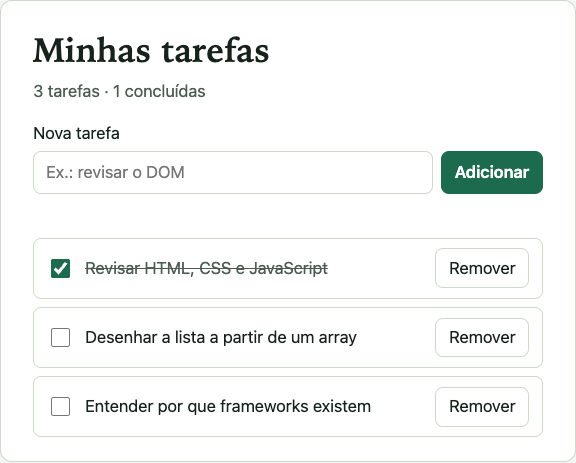
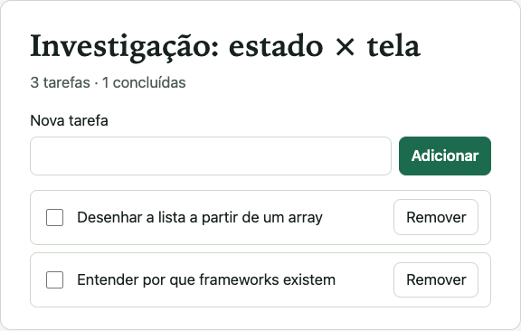

Módulo 3: da página em JavaScript puro ao Vue, parte por parte
Nove etapas de 40 minutos com a mesma Todo List. Em cada uma: o que o dev frontend precisa conhecer, executar, entender e pesquisar.
| Hoje (etapa 06) | Evidência de conclusão |
|---|---|
| De onde vêm HTML, CSS e JS | As três requisições no Network |
| Desenhar a lista a partir de dados | Ação nova que muda o estado e chama render() |
| Por que estado e tela se desencontram | O defeito de sincronia explicado com o Console |
Pasta da etapa: etapas/06-dom-imperativo. Revisão compacta das Aulas 1
e 2 — o foco do módulo é o Vue, a partir da etapa 07.
Cliente, servidor e as três camadas da página
Estrutura · HTML
O que existe: título, formulário e uma <ul> vazia.
Apresentação · CSS
Como aparece: cores e Flexbox (container organiza os itens).
Comportamento · JS
O que acontece: estado, eventos e render().
Três pedidos, três respostas — e uma lista que o HTML não tinha
Requisição Status Tipo
http://localhost:8088/ 200 document
http://localhost:8088/estilos.css 200 stylesheet
http://localhost:8088/app.js 200 script
Tela real da etapa 06. Compare: resumo e três tarefas.
<ul id="lista" class="lista"></ul><ul id="lista" class="lista">
<li class="tarefa concluida">…</li>
<li class="tarefa">…</li>
<li class="tarefa">…</li>
</ul>node ../ferramentas/servidor-local.mjsObserveA <ul> do arquivo está vazia. Quem colocou os três <li> que o Elements mostra?
Prática: toda ação muda o estado e chama render()
function render() {
lista.replaceChildren(...tarefas.map(criarItem))
const concluidas = tarefas.filter((t) => t.concluida).length
resumo.textContent = `${tarefas.length} tarefas · ${concluidas} concluídas`
}
function remover(id) {
tarefas = tarefas.filter((t) => t.id !== id) // novo array
render() // tela = cópia do estado
}- Tarefa
- Botão “Concluir todas”: um novo array com
mape, em seguida,render(). - Flexbox
- Em
.tarefa, troquejustify-contente explique o efeito no botão. - Evidência
- Todas riscadas e o resumo certo, sem recarregar.
Dica
Um <button id="concluir-todas"> e addEventListener('click', …).
Mostrar solução (após a tentativa)
document.querySelector('#concluir-todas').addEventListener('click', () => {
tarefas = tarefas.map((t) => ({ ...t, concluida: true })); render()
})Quem garante que a tela mostra o estado? Você, em cada ação
Modelo: a tela é uma consequência do estado. No JavaScript puro, essa consequência depende de você lembrar.
Custo escondido
render() recria todos os <li>. Marque uma caixa pelo teclado (Tab, Espaço): o foco vai para o <body>, porque o elemento focado foi substituído.
Investigação: depois de remover, o resumo mente

investigacao-sincronia/ após remover a 1ª tarefa: resumo “3 tarefas”, lista com 2.tarefas.length
document.querySelector('#resumo').textContent- Hipótese: qual ação esquece um pedaço da tela?
- Evidência: estado (2) × resumo (3) no Console.
- Correção: a menor mudança possível.
Dica
Compare adicionar, alternar e remover: qual não chama atualizarResumo()?
Mostrar solução (após a tentativa)
remover faz item.remove() mas não chama atualizarResumo(). A correção pontual é chamá-la; a correção de desenho é ter um render(), como na versão principal.
Pesquisar: a documentação primeiro, a IA com verificação
Nesta Todo List em JavaScript puro, o resumo fica desatualizado depois de remover uma tarefa. Estas são as funções: [cole remover() e atualizarResumo()]. Responda com: (1) a causa em uma frase; (2) a evidência que devo procurar no Console; (3) a menor correção. Não reescreva o arquivo nem sugira um framework.
Onde procurar
Rejeite sugestões com innerHTML para texto digitado pelo usuário: o título passaria a ser interpretado como HTML.
Verificação sem IA
- 1
- Qual das três requisições traz o comportamento da página?
- 2
- Em
.tarefa { display: flex }, quem é o container e quem são os itens? - 3
- Uma função muda
tarefase não chamarender(). O que o usuário vê?